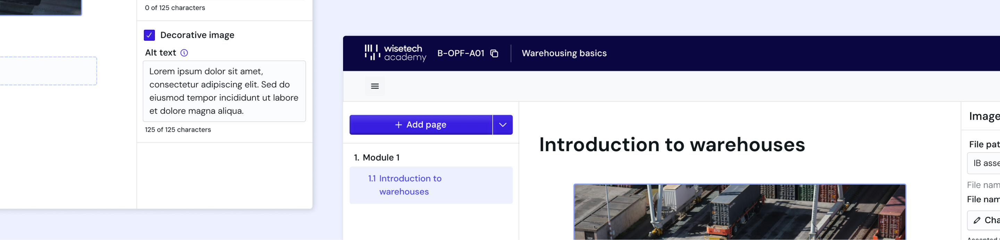
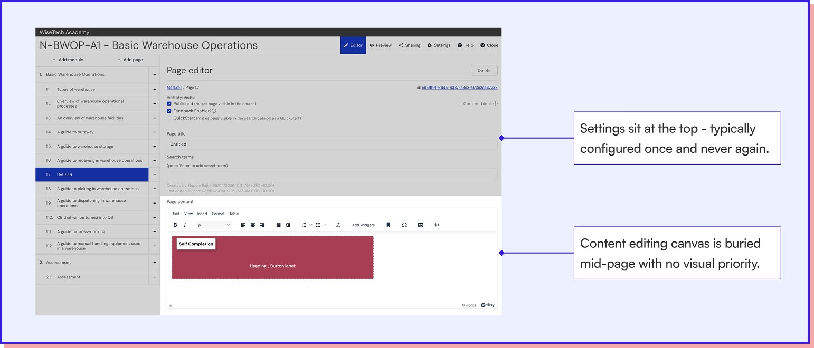
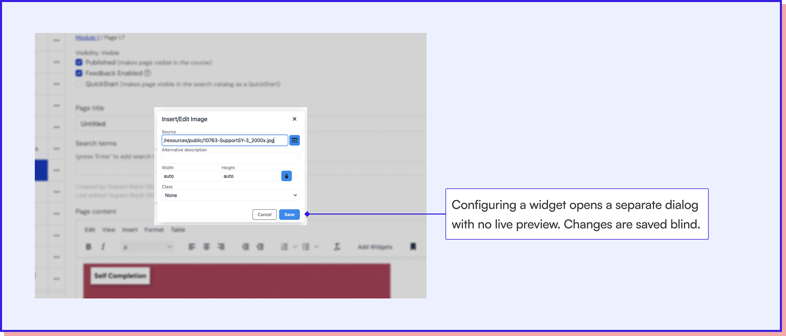
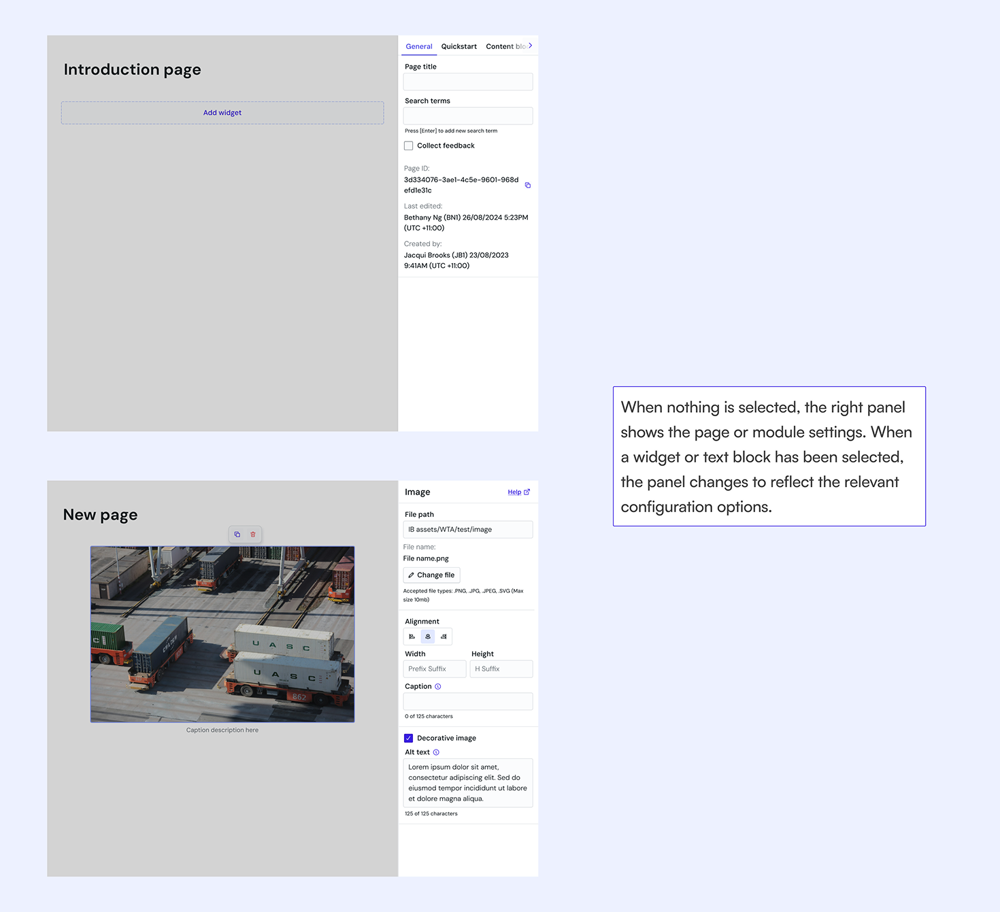
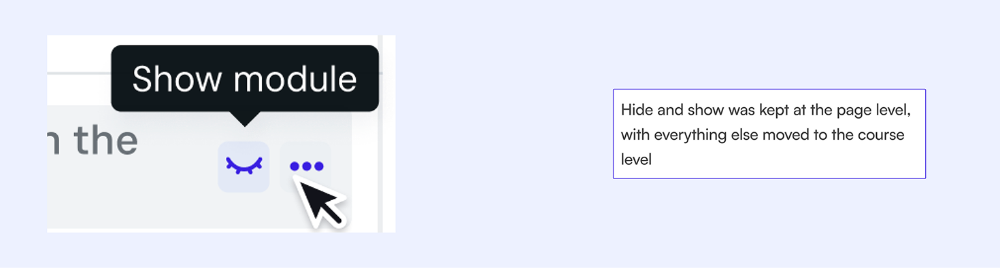

Modernising WTA's content authoring experience.
How might we redesign the course authoring experience so creators can build and edit content quickly without needing technical knowledge?
Problem:
The current tool had accumulated years of technical debt, forcing creators to rely on manual workarounds.
What I did:
I conducted research and designed the new tool end-to-end alongside another designer, from research through handoff.
What changed:
A single tool that meets basic authoring expectations, and a PrimeVue component library that was introduced across the broader admin platform.
- The initial brief was to uplift the UX of the existing content creation platform.
- The tool had been worked around so extensively that the workarounds had become the workflow.
- The platform had become a hindrance for editors.
To understand the current workflow better, we conducted the following activities:
- Platform audit of the existing tool
- Context setting interviews with 3 editors
The interface treats the main editing canvas as a secondary priority.

The canvas doesn't support editing widgets.
- As a result, workarounds were built (like going into the source code) to make simple changes.

I planned and conducted 2 rounds of usability testing via prototypes of our initial concept with 8 stakeholders, spanning across Product, e-Learning, and Certifications teams.
The 3 core flows tested were:
- Program set up
- Adding and editing courses
- Advanced customisations
Users are willing to adapt their workflow, but muscle memory occasionally gets in the way.
Users avoided terminology and iconography that felt foreign.
Publish and visibility were two different concepts handled in the same place.
Focus is given to the task at hand.
The right panel was dynamic, surfacing the relevant options for whatever was selected.

Only one level of display settings was kept.

- Defined and implemented a new component library to be used in internal tools.
- Positive reception from 11 internal users at launch.
- 6 new widgets have been requested and integrated since launch, suggesting creators are working within the tool rather than around it.
A detailed walkthrough is available at request.